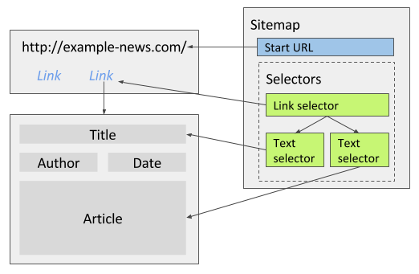

安装
你可以从 Chrome store来下载本插件安装。
安装后，您应该重新启动Chrome以确保本插件完全加载。如果您不想重新启动Chrome，则只需在安装后创建的选项卡上使用本插件。
需求
本插件需要 Chrome 31+ 以上版本. 没有操作系统的局限性。
运行软件
Act Crawler软件集成到Chrome开发工具中。图1显示了如何打开它。您还可以使用这些快捷方式来打开开发工具。打开开发工具后打开Act Crawler。
快捷键:
- windows, linux:
Ctrl+Shift+I, f12,打开 Tools(更多工具) / Developer tools(开发者工具)
- mac：
Cmd+Opt+I, 打开 Tools / Developer tools
图1:打开程序
网站采集
在浏览器中打开你想要采集的网站
新增网站
在插件页面点击新增网站，新增网站时需要确保网站名称是唯一的，然后需要指定网站的入口URL，这是采集的起始URL。如果你的网站需要多个采集入口，还可以添加多个入口URL。例如：如果你已经为网站的各个板块找好入口URL，那么你可以点击"+"号添加多个入口URL输入框，填上每个板块的入口URL。
指定范围段的URL
在网站的URL为数字编号的情况下，创建范围启动URL比创建每个导航链接的入口URL要简单得多。若要指定范围URL，请使用正则表达式的范围定义[1-100]替换起始URL的数字部分。如果网站的URL中使用零填充，则在范围定义[001-100]中添加零填充。如果你想跳过一些URL，那么你也可以指定像[0-100:10]这样的增量。
范围段URL：http://example.com/page/[1-3]表示:
http://example.com/page/1http://example.com/page/2http://example.com/page/3
从0开始的范围段URLhttp://example.com/page/[001-100]表示:
http://example.com/page/001http://example.com/page/002http://example.com/page/003
使用增量范围的URLhttp://example.com/page/[0-100:10]表示:
http://example.com/page/0http://example.com/page/10http://example.com/page/20
添加任务
新增网站后，可以给网站添加任务。在网站的任务列表面板中，可以添加任务、修改任务并指定父任务。任务可以以树形结构添加。Act Crawler将按照树结构中的排序顺序执行采集。例如，有一个新闻网站，您想采集首页上出现的所有文章，网站结构如下图1所示：
 图1: 网站结构
图1: 网站结构
想要采集这种类型网站，你可以创建一个选用 链接选择器 的任务，它将在首页中提取所有的文章链接。然后，您可以添加一个选择 文本选择器 的任务作为它的子任务，该 文本选择器 任务将从父任务 链接选择器 采集到的链接做为入口地址来提取文章的相关信息。下面的图片说明了这种新闻站点应该如何创建网站采集任务。
图2: 网站任务
请注意，在创建任务使用选择器选定数据时，请使用选取预览和数据预览功能，以确保正确的选取元素并采集到正确的结果。
更多关于任务选择器的信息请参考选择器。在开始使用本软件前，你至少应该先阅读并理解以下选择器的使用范围及使用方法：
任务图
在为网站创建了相关任务之后，您可以检查网站所配置的任务图。下面的图片显示了一个任务图示例。
图3: 网站任务图
网站数据采集
在您为网站创建好了任务之后，您就可以开始采集了。点击网站下拉框选择配置采集，配置相关参数后点击开始采集，将打开一个新的弹出窗口，在该窗口中，Act Crawler将根据配置的网站入口URL载入页面并从中采集数据。采集完成后，弹出窗口将关闭，您将收到采集结束的弹出消息通知。您可以通过点击网站下拉框的浏览数据打开浏览面板查看已采集的数据，并通过点击网站下拉框的导出数据导出CSV文件。
选择器
Act Crawler具有多种类型的选择器，可用于不同类型的数据提取和及满足不同类型的网站。选择器可分为三类：
- 用于数据获取的数据抽取选择器
- 用于链接获取的链接抽取选择器
- 用于多条记录元素获取的元素抽取选择器
数据抽取选择器
数据抽取选择器简单地从所选元素返回数据。例如， 文本选择器 从选定的元素中提取文本。以下这些选择器都可以用作数据抽取选择器：
链接抽取选择器
链接抽取选择器将抽取出页面的所有链接URL，可作为其子任务的入口URL。例如:如果在一个网站的任务图中有一个链接抽取任务和3个文本抽取任务，那么Act Crawler程序将利用 链接选择器 任务提取出所有URL，然后打开每个链接URL，并按照子任务中配置的 文本选择器 来提取相关数据。当然， 链接选择器 任务之后也可能有 链接选择器 任务作为子任务，那么这些子 链接选择器 任务采集到的链接将被用于更下一级的任务入口地址。以下是当前可用的链接抽取选择器：
元素抽取选择器
元素抽取选择器用于页面中包含多条记录的数据元素的元素选择。例如，可以使用元素抽取选择器来选择电子商务类网站中的商品列表。Act Crawler程序将会根据 元素选择器将获取到每个商品元素作为子任务的HTML，然后子任务将在该HTML里抽取商品的每个属性。以下是当前可用的元素抽取选择器：
选择器配置选项
每个选择器都有配置选项。在这里你可以看到最常见的。在选择器文档中描述了每个选择器的具体配置选项。
- 选择器-CSS 选择器，它可以在页面上选择出将要获取的元素。
- 多选-在单个选择器任务中，当需要将多次选择的数据部分合并采集或者每个选择部分单独拆分成一条记录时，应该勾上此选项。两个或多个选择器任务之间勾选此选项是不会将采集结果数据合并的。
- 延迟 - 作用在下载页面操作之后，根据选择器的规则进行解析之前等待的时间。
- 父任务 - 配置此任务的父任务以生成任务树。
注意！使用本工具在一个网站_root下建立多个采集任务时，系统会给该网站下的每个一级任务分别建表保存这个一级任务及其下子任务所采集的数据，两个一级任务之间的数据是不能逻辑关联的。例如你想要获取该网站下所有导航链接和翻页链接下的数据，如果直接建立2个 链接选择器 类型的任务所采集到的数据之间是不能逻辑关联的。正确的配置方式应该是先利用 元素选择器类型并且勾选上多选的方式建立一个一级任务获取到所有要进一步采集的部分，然后再建立各自解析的子任务来进行数据的获取。
文本选择器
文本选择器 用于文本选择。 文本选择器 将从选定元素和其所有子元素中提取文本。HTML将被剥离，只有文本将被返回。选择器将忽略Script和style标签内的文本。
标签将用换行符替换。您还可以将正则表达式应用于对结果数据进行更精确的返回。
配置选项
- 选择器-CSS 选择器，用于提取需要获取文本数据的元素
- 多选 - 多个选中的记录会一起合并成一个值. 通常不需要勾选. 如果你想在一个页面中用勾选多选来获取多段文本，还不如直接选择用 元素选择器。
- 正则 - 正则表达式将从结果中提取子串
正则表达式
正则表达式属性可用于提取选择器提取的文本的子字符串。当使用正则表达式时，整个匹配项中只有（组0）将被返回结果。更多的正则表达式学习可以到www.regexr.com网站。
下面是一些你可能会发现有用的例子：
| 文本 |
正则 |
结果 |
| price: 14.99$ |
[0-9]+\.[0-9]+ |
14.99 |
| id: H83JKDX4 |
[A-Z0-9]{8} |
H83JKDX4 |
| date: 2014-08-20 |
[0-9]{4}\-[0-9]{2}\-[0-9]{2} |
2014-08-20 |
用例
解析URL中只有一条记录多个属性值的页面
例如，你需要抓取新闻详情页，页面可能包含文章、标题、发布日期和作者。 链接选择器 可以将采集器导航到这些文章页中的入口URL。多个 文本选择器 任务可以提取标题、日期、作者和文章。对于 文本选择器 任务，一般多选应该不被勾选，因为获取到的记录结果只会保存到一个字段中。

图1: 只有一条记录多个属性值的页面
解析URL中有多条记录多个属性值的页面
电子商务网站通常每页有多个项目。如果您想采集这些项目的所有项，则需要先创建一个 元素选择器类型的任务先来解析所有项然后再创建多个 文本选择器 任务来解析项目中的具体属性。
 图2: 多条记录多个属性值的页面
图2: 多条记录多个属性值的页面
解析URL中有多条记录单个属性的页面
例如，您想提取一篇文章的所有评论。在一个页面中有多个评论，只需要评论内容（如果您还需要其他属性，请参阅上面的示例）的情况下。您可以创建一个 文本选择器 任务来提取所有评论内容，并且勾选上多选，因为您需要将所有选上的评论内容都解析出来。如果没有勾选上多选的情况下，采集解析器将只能解析出第一段选中的内容值。
 图3：多条记录单个属性的页面
图3：多条记录单个属性的页面
链接选择器
链接选择器用于获取所有A标签的链接。如果你光使用链接选择器创建一个任务而没有任何子任务，那么它将只提取链接文本和链接的HREF属性。如果向链接选择器任务添加子任务，那么这个链接选择器任务会将获取到的链接当做子任务的入口URL。如果你需要深入采集多个链接，则需要勾选上多选
注意！链接选择器只适用带有href属性的<A>标签。如果链接选择器不能满足您的工作，那么您可以尝试下面这些解决方案：
- 检查单击一个链接后浏览器中的链接是否更改（不包括URL中带上时间hash值等无验证参数的链接）。如果链接不改变，那么站点可能使用Ajax进行数据加载。这时候你应该使用点击元素选择器 而不是使用 链接选择器 。
- 如果网站是打开一个弹出窗口，则应该使用 弹出窗链接选择器 。
- 该网站可能使用JavaScript 的window.location来更变更URL。Act Crawler目前版本无法处理这种情况。
配置选项
- 选择器-CSS 选择器用于选择链接元素，从中提取出所有链接。
- 多选 - 勾选上时将会将每个解析出的URL单独保存一条记录。通常还需要通过数据预览功能检查看是否解析正确。
用例
有多个导航类别的页面
例如，电子商务网站具有多层次的导航类别->子类别。为了从所有类别和子类别中采集数据，可以创建两个 链接选择器 任务。一个选择器任务将选择类别链接，另一个选择器任务将选择类别页中可用的子类别链接。子类别 链接选择器 任务应作为类别 链接选择器 任务的子级。从子类别页提取基本数据的任务应该作为子类别选择器任务的子任务。
 图1: 多链接选择器用于分类导航
图1: 多链接选择器用于分类导航
处理分页
例如，电子商务网站有多个类别。每个类别都有一个项目列表和分页链接。也有一些页面不能直接从类别中获得，但是可以从分页页面中获得（可以看到分页链接1-5，但不是6-8）。你可以通过建立一个 链接选择器 任务来获取每一个类别的URL，然后再建立一个子任务来从类别页面中取项目，但是这些子任务将只能获取到第一个分页页面的项目。若要从所有分页页面中提取项目，包括其他在开始时不可见的链接，则需要再创建一个 链接选择器 任务作为第二级任务，该任务负责获取到所有分页页面链接。图2显示了如何在网站中创建此类网站任务。根据图2的配置，当Act
Crawler执行第一个任务时，它将提取出页面中所有的分类入口链接。之后，根据配置的数据解析子任务则从该页面获取到相关的项目信息，并且它还会根据配置的分页链接任务找到所有的分页链接。然后继续访问分页链接入口获取页面上的项目信息。如果分页链接任务下面没有创建子任务，那它将只能递归地发现所有分页列表URL。图3显示了一个网站的采集流程图，您可以看到分页链接任务如何发现更多的分页链接和更多的数据。
 图2: 分页网站任务
图2: 分页网站任务
 图3: 分页网站的任务图
图3: 分页网站的任务图
图片选择器
图片选择器 可以提取图片的src属性（URL）。
注意！当选择用于 图片选择器 的CSS选择器时，站点内的所有图像可能被移动到顶部。如果这个功能在某种程度上破坏了原始网页布局，请将其报告为bug。
配置选项
- 选择器 - CSS 选择器 用于图片链接提取.
- 多选 - 勾选上时将会将每个解析出的URL单独保存一条记录。通常在选择图像选择器时勾选。
- 下载图片 - 该功能计划是用来下载图片的。暂时使用图片下载脚本代替。
用例
参考 文本选择器 的用例。
图片下载脚本
图片下载脚本将在利用 图片选择器 任务下载下来的数据导出的CSV文件中查找图片URL并下载它们。
Windows下的使用方法
- 从下面地址下载并安装 python 3.x: https://www.python.org/downloads/
- 从下面地址下载图片下载脚本: https://github.com/webscraperio/image-downloader
- 采集网站的图片数据并导出CSV文件
- 拖动CSV文件到文件
image-downloader.py上
图1: windows下图片下载
macOS, Linux下的使用方法
- 安装 python ，一般服务器都已经自带安装。
- 从下面地址下载图片下载脚本: https://github.com/webscraperio/image-downloader
- 将文件
image-downloader.py 拷贝到 Downloads路径。
- 采集网站图片数据并导出CSV文件
- 将CSV文件放到
Downloads 目录。
- 打开
Terminal 应用. 如果没有安装需要先安装。
- 切换到
Downloads 目录: bash cd Downloads
- 运行脚本:
bash python image-downloader scraped_data.csv
Fig. 2: macOS下图片下载
表格选择器
表格选择器 可以从html的页面中提取表格中的数据。表选择器包括有3个可配置的CSS 选择器。选择器用于表格选择。选择器确定选中后，选择器将自动尝试猜测标题行和数据行的选取范围。您可以单击这些选择器上的选取预览，以查看各个选择器是否找到了正确的表的标题和数据行。当从多个页面中提取表格数据时，表头选择器用于标识表列名，也可以重命名表列名。图1显示了从表中提取数据时应该选择的内容。
图1: 表格选择器
配置选项
用例
参考 文本选择器 的用例。
属性选择器
元素 属性选择器可以提取HTML元素的属性值。例如，您可以使用此选择器从下面的html文本中提取出title属性：<a href="#" title="my title">link<a>。
配置选项
- 选择器 - CSS 选择器 用来选取元素。
- 多选 - 如果需要将选中的多个属性生成多条记录时需要勾选。
- 属性名 - 将提出该属性名的值。例如：
title, data-id.
用例
参考 文本选择器 的用例。
HTML选择器
HTML选择器 可以提取所选元素中的HTML和文本。只提取该元素的innerHTML 。
配置属性
- 选择器 - CSS 选择器用来选择需要获取HTML的元素。
- 多选 - 勾选上时将会对多个选中的元素提取出多条记录。
用例
参考 文本选择器 的用例
归类选择器
归类选择器 可以将来自多个元素的文本数据组合为一个记录。提取的数据将存储为JSON格式。
配置属性
- 选择器 - CSS 选择器 用来选择需要合并抽取的元素。
- 属性名 - 选填，该选择器可以提取所选元素的属性。如果指定，采集也会将此属性添加到生成的JSON中。
用例
解析文章参考文献
例如，您需要提取可能具有多个引用链接的新闻文章。如果您用 链接选择器 并且勾选上多选来获取这些链接，则在结果集中会得到多条记录，并且每个记录都包含一个引用链接。如果使用分组选择器，可以将所有这些引用链接序列化为一条记录。可以选取所有引用链接并将属性名称设置为href，以提取出这些站点的链接作为一个json格式字符串保存。
元素选择器
元素选择器是对HTML中包含多个相同数据元素的元素项选择。例如： 元素选择器可以用来对一个电子商务网站列表中的项目进行选择。该选择器任务将获取到的每个项目的html部分作为子任务的处理范围。子任务将只提取选定元素子集下的元素信息。
注意！如果页面是通过向下滚动页面或点击按钮来动态加载新的项目则你应该试试下面这些选择器：
配置选项
- 选择器 - CSS 选择器 用于选取其子任务需要处理的HTML范围。
- 多选 - 将会按照多个选择的范围提取出多条记录(一般在该类型下都需要选上). 如果没有子任务则不需要勾选
用例
从页面中获取多个项目
例如，电子商务网站有一个带有项目列表的页面。你可先建立一个使用 元素选择器选出包装这些项的元素的任务，然后向其添加多个子任务，以便子任务只在父任务的项目范围HTML中抽取其他的属性数据。图1显示了在这种情况下如何使用 元素选择器来创建采集任务。
 图1: 多个项目采集
图1: 多个项目采集
从表中提取数据
类似于上面例子中项目的选择，您还可以利用 元素选择器来选取所有表格行，并添加子任务来分别获取本单元格中的其他字段信息，虽然表选择器可能是更好的解决方案。
点击元素选择器
点击元素选择器 与 元素选择器类似。它的主要目的也是进行元素选择然后作为子任务的入口。唯一的区别是，点击元素选择器 可以通过模拟点击按钮操作来加载新的页面元素。例如，页面使用JavaScript和Ajax进行分页或项目加载的情况可以使用该选择器。
注意！在选择可点击元素时，应该通过在元素上移动鼠标并按下“S”来选择它们。这种操作将避免按钮触发点击事件。
配置选项
- 选择器 - CSS 选择器 用来选择需要获取的项目元素，以做为其子任务的选取范围。
- 点击选择器 - CSS 选择器用来选择需要模拟点击操作以获取更多数据的按钮。
- 点击类型 - 用来给选择器判断什么时候没有新数据以便停止点击事件。
- 点击元素唯一性 - 选择器用来知道哪些按钮已被点击过。
- 多选 - 将会根据选择器选取的多个项目生成多条记录(一般都需要选上)。如果没有子节点任务则不需要勾选。
- 延迟 - 延迟元素选择和点击事件之间的延迟。这通常是指定的，因为数据不会在点击后立即从服务器获取到数据展示。如果您不想漏数据，超过2000毫秒可能是一个很好的选择，因为服务器响应不够快。
- 丢弃初始元素 - 程序将只保存开始模拟点击操作之后的页面数据。这对于去重可能是有用的。
点击类型
点击一次
点击一次类型将只模拟点击按钮一次。如果规则能匹配出新的按钮的话也会点击。例如，分页链接可能只显示1到5页，但页面6-10在之后的页面的相同位置可能出现，则选择器也会作用在那些按钮上。
点击多次
点击多次类型将模拟点击指定按钮多次，直到没有新的数据元素出现。一个新的数据元素是指具有唯一文本内容的元素。
点击元素去重判定
当点击类型选择的是点击一次时，根据去重规则，被判定为相同的按钮只会被触发一次；当点击类型选择的是点击多次时，去重判定规则将用于判断是否还有新的数据元素出现以便结束按钮的模拟操作。
- 文本去重 - 具有相同的文本内容被认为是同一个。
- HTML+Text去重 - 具有相同的HTML和文本内容被认为是同一个。
- HTML去重 - 具有相同的HTML被认为是同一个。
- CSS去重 - 具有相同的css属性被认为是同一个。
用例
导航分页建议配置点击一次类型的点击元素选择器 任务
例如：在一个列表网页上通过很多分页按钮来加载这些数据(点击按钮后url不变)。配置一个选用点击元素选择器 的任务，你可以先选出需要获取的数据项和需要模拟点击的按钮。采集将会自动模拟按钮的点击事件来获取所有的数据项。同样，你还需要给这个任务添加一个或多个子任务来获取数据项的各个字段信息。在图1你可以看到此类网站的具体采集配置方式。
 图1：网站配置点击一次的点击元素选择器任务
图1：网站配置点击一次的点击元素选择器任务
通过点击“更多”按钮加载数据的电子商务类网站任务配置
这个例子与上面的例子类似。唯一不同的是，在这类网站中，需要通过多次点击某个按钮来加载新的数据。在这种情况下，需要配置一个点击元素选择器 的任务并且将点击类型设置为点击多次。在图2中，您可以看到此类网站的具体采集配置方式。
图2：网站配置点击多次方式的点击元素选择器任务
CSS选择器
Act Crawler 利用CSS选择器来定位到web页面的HTML的相关元素并获取数据。当使用Act
Crawler的选择器工具来选取一个元素时，程序将自动获取到该元素相关的xpath。不过你也可以自己获取到然后填写到“选择器”的输入框，然后点击“选取预览”按钮来进行测试。Act
Crawler支持CSS1-3的版本，并且支持获取通过JQuery添加的样式。下面是一些有用的相关说明文档链接：
附加说明
现期版本暂只支持一个客户端打开一个CSS选择器。
在CSS选择器中，默认禁止同时选择2种不同类型的元素。如果你确定需要采集2种类型的元素，那么需要在CSS选择器的提示后勾选上允许选择不同的类型元素，然后再次点击选择其他的元素。
在
CSS选择器的右端默认会提示是否开启键盘快捷键输入响应，点击后会有
S、
P、
C三个快捷键的提示，其中键盘点击
S键表示选择当前选中的内容；键盘点击
P键表示选择当前选中部分的父节点，当没有父元素时则无效，可连续点击多次来获取父元素；键盘点击
C键则表示选择当前选中部分的子元素，当没有子元素的时候则无效，可连续点击多次来获取。
在利用CSS选择器选择好相关内容后，需要点击结束选取按钮，程序才会将选中的内容的xpath信息赋值给相应的选择器任务。
图1：CSS选择器
存储备份
Act Crawler插件的【右键】-【选项】支持配置是本地存储还是CouchDB存储，还支持配置将任务上传给自有的采集系统。默认情况下是选择本地存储数据。
任务上传
需要配置服务器端接收的地址，程序上传的数据格式是json，contentType为"application/json;charset=utf-8"
本地存储
本地存储备份使用浏览器的数据存储。这种方式不支持从一个浏览器备份到另外一个浏览器中。
CouchDB
CouchDB
CouchDB是一个基于REST的NoSQL的JavaScript数据库。程序支持配置为利用CouchDB来存储网站任务及采集数据，然后所有的Chrome都可以配置访问数据。要做到这一点，您可以通过右键单击扩展程序图标和选择【选项】打开配置页，然后您可以手动配置切换存储方式。
例如，你可以这样配置：
- 任务存储 db - http://localhost:5984/scraper-sitemaps
- 数据存储 db - http://localhost:5984/